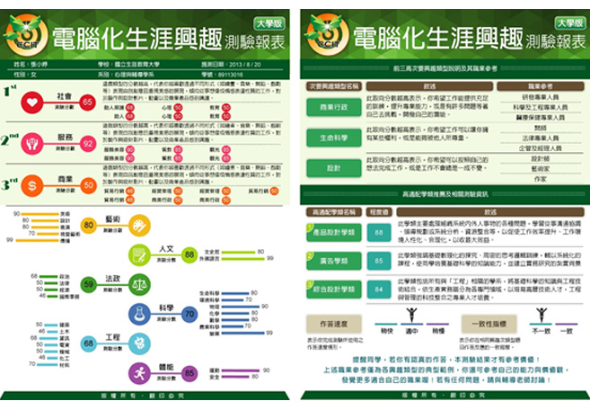

-
- 報表須知
-
報表開放與管理
- 學生完成測驗後，學校管理者可至【學生報表】＞【報表開放與下載】頁面，查看學生個別報表、下載整體測驗結果，並依施測需求設定學生端的報表開放方式。
- 學生報表自完成測驗日起保留四年。學校管理者須於期限內瀏覽或下載相關報表資料，逾期後將無法再取得報表。
例如：若於民國110年10月1日完成測驗，則可於民國 114 年 10 月 1 日前瀏覽或下載報表。 - 學校管理者可依施測方式及解測需求，設定下列學生端報表開放方式：
● 完成測驗後立即開放：學生完成測驗後，即可查看及下載個人報表。
● 指定日期開放：學生完成測驗後，自指定日期起可查看及下載個人報表。
● 由學校管理者開放：學生完成測驗後，須由學校管理者於系統中開放報表，始可查看及下載個人報表。 - 施測期間若有新增完成測驗者，學校管理者可點選【更新報表資料】，更新後即可查看最新的個別報表及整體測驗結果。
-
報表資訊說明
（暫缺）